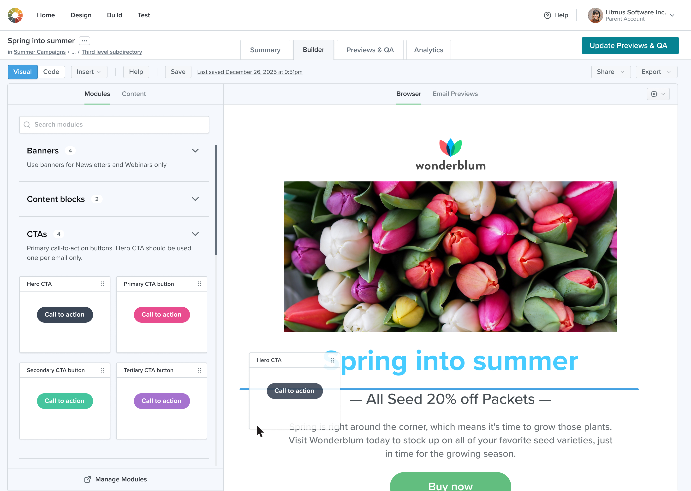
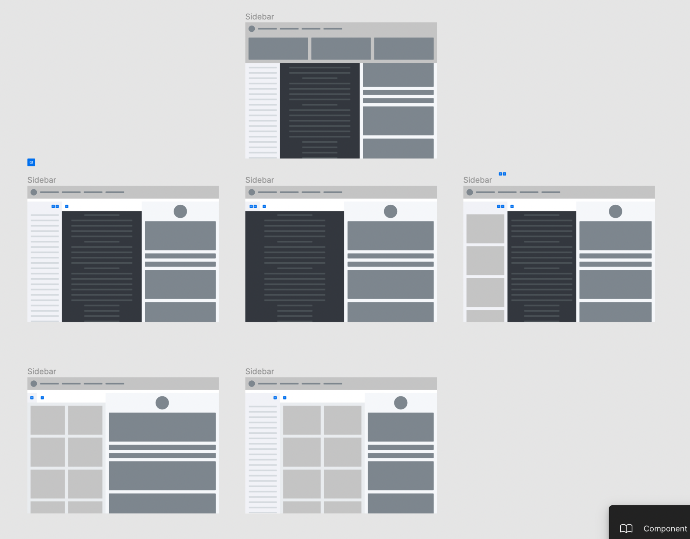
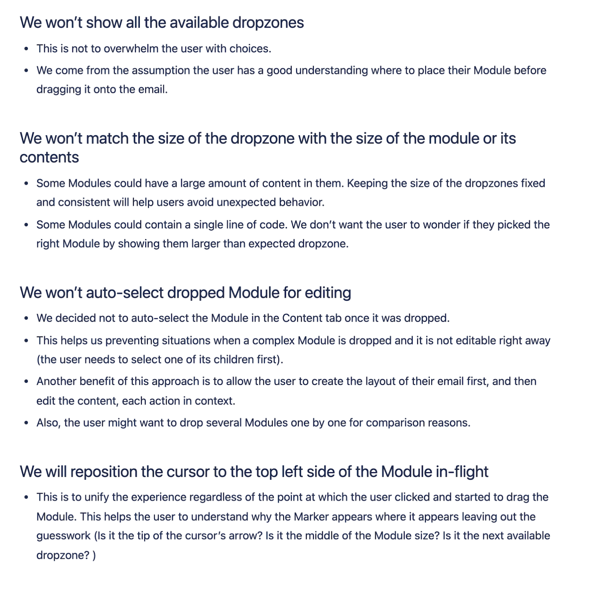
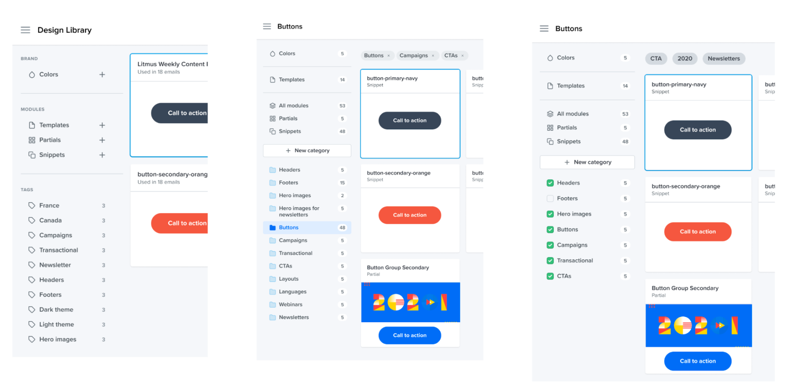

Litmus is an email marketing platform that offers a robust toolset to help customers build emails (via Code Editor or Visual Editor), test them across a wide range of email clients, review them with stakeholders, and improve their email programs by analyzing performance.
The project I’m describing here was one of several running in parallel. For instance, other teams were working on a navigation redesign that directly impacted the adoption and discoverability of Modular Building.

The problem, the project, and the team
One of Litmus’s core objectives as a company is to scale customers’ email production. Modular building supports this goal by delivering more predictable outcomes when creating emails and enabling non-developers to work with predefined modules—without needing to know HTML. As customers create more assets in the platform, the product becomes stickier. And the more collaboration happens, the more seats are purchased—leading to larger deals and, ultimately, higher profits.
Modular building was a natural extension of earlier work, namely the introduction of the Visual Editor (alongside the long-standing Code Editor) and the basic Design Library, which contained reusable modules like code snippets and partials.
While customers could already create modules and templates in Litmus, the experience was painful—especially for non-technical team members and email developers. They had to switch between different parts of the product or memorize module names to insert them into the email HTML. The Visual Editor lacked support for pre-built modules altogether and could only work with existing HTML.
At the same time, many customers were dissatisfied with the email-building tools offered by their Email Service Providers (ESPs)—the systems used to send email campaigns to subscriber lists—and were actively looking to avoid those poor experiences.
There were also market signals pointing to a growing demand for modular building, evidenced by the rise of focused competitors like Stensul, Dyspatch, Knak, and others.
Based on market research, we made an informed assumption that enabling modular building would lead to larger and more frequent deals (with estimated growth up to 15%), offer a strong competitive advantage, and unlock new opportunities like personalization through merge tags (i.e., variables in HTML). The project also targeted a new persona: non-technical content editors.
Guided by customer feedback and business potential, the team decided to bridge the gap between the Design Library and the Editors—making it easier for different types of users to leverage modules in their email creation workflows.
Here are a few quotes from customers, gathered during UX research:
"I want to enable non-technical people at my company to build emails using templates and modules I control."
"If we had this, we could build emails much faster."
"I want new team members to get up to speed quickly. I want to drag and drop modules."
"We’re duplicating efforts—our creatives design full layouts in Figma, and then everything gets redone. A drag-and-drop editor where I can select modules and pass them to creatives would help."
Litmus follows a Continuous Discovery approach as part of its UX research. Each week, product team members speak with customers who are open to sharing their experiences, goals, and pain points. These ongoing interviews help us better understand how customers use Litmus, identify areas for improvement, and uncover new product opportunities. Continuous Discovery also helps us develop a deeper understanding of our users and what they need to be successful.
The team:
Product Manager
– Responsible for successful project delivery and cross-team communication with Sales, Marketing, and Executive leadership.
Three Software Engineers
– Collaboratively worked on technical spikes, feasibility investigations, proofs of concept, and defining the tech stack.
UX Researcher
– A shared resource across three teams, assisted with participant recruitment and recommended best practices for customer interviews.
Design Director
– Oversaw overall design direction and ensured the quality of the user experience.
Director of Software Engineering
– Coordinated the engineering effort, managed dependencies, and ensured code quality.
My responsibilities included:
Working closely with the Product Manager to plan, test, and deliver the project.
Coordinating user testing of interactive prototypes, documenting findings, and creating a plan to address any usability issues.
Exploring the problem space, evaluating possible solutions, and defining both the MVP and longer-term vision versions.
Leading research and design efforts, including UX and visual design.
Organizing and facilitating design exercises such as ideation sessions and card sorting.
Providing design solutions and user flows through high-fidelity mockups and prototypes to illustrate interactions and workflows.
Collaborating with other designers to exchange ideas, identify best practices, and spot potential flaws. Keeping the team updated on progress and actively seeking feedback.
Ensuring consistency in UI patterns and interactions by aligning closely with the UX engineer and the design system.
Clearly articulating the rationale behind design decisions to both the design team and stakeholders.
Working with engineers to ensure strong alignment between design and implementation, supporting them throughout development to maintain design quality in the final product.
Coordinating with the marketing team on A/B and split testing strategies.
Analyzing performance metrics and making recommendations to enhance the solution.
Educating engineers on best practices and the effective use of design system components.
The plan and success criteria
A one-pager—a document outlining the problem, supporting evidence, and user needs—was created to align multiple teams around the problem and the "why".
The design plan included:
UX research
Competitive analysis and an inspiration board
Ideation sessions with the scrum team, including engineering, marketing, and design members
Exploring solutions and use cases, mapping the user journey
Prototyping interactions
Testing assumptions through user interviews
Usability testing of both "Organizing Modules in Design Library" and "Drag and Drop" functionalities
High-fidelity mockups
Design success criteria:
An intuitive, easy-to-use experience for building emails with modules
Positive customer feedback on the solution
Satisfaction from design and scrum teams with progress, timely delivery of design assets, and design support during implementation
A scalable solution that allows for the addition of future capabilities
Adherence to best practices, including handling of edge cases, empty states, day-zero scenarios, and data loaders
High quality—feature stability and manageable bug volume
Compliance with the design system
Achievement of desired business outcomes
Desired business outcomes of the project:
Increase in active accounts using the Visual Editor
Increase in active users within the Visual Editor
Increase in activity (pageviews, clicks, and saves) in the Visual Editor
Increase in the number of Design Library modules created and updated
Additionally, improved retention and upgrades from lower to higher-tier plans were considered desirable secondary outcomes.
Below is a selection of artifacts created during the design process.
Competitive analysis and inspiration board
Ideation session with engineers and marketing
Initial flowchart depicting possible functionality
An exploration of layouts and interaction areas

Studying how personas and user roles are affected
An exploration of modal windows
The timeline and delivery
The project was developed iteratively over the course of two quarters.
The rationale behind quarterly releases is to give the Marketing team sufficient time to craft a strategy for promoting new features, develop supporting materials, and train the Sales and Customer Support teams.
Development took place in a staging environment, with new features gated behind beta flags. The rollout followed a phased approach—starting with customers who had expressed interest in the beta, and gradually expanding to the broader customer base.
Key decisions
Introducing Categories
as a way to organize modules—versus common UI patterns already present in the app:
Tags
are too loose: we didn’t want customers to create too many potentially duplicate tags.
Folders
are too rigid: not ideal for storing a module in multiple folders or implying nested structure.
Introducing the Insert Panel
in the Code Editor as a single source for modules and images. This allowed for inserting not only modules but also other types of content through a unified Insert menu.
Introducing Tabs
in the Visual Editor, instead of a panel or modal. Diverging UI patterns between Visual and Code Editor were acceptable, since the Code Editor required persistent code visibility and included additional actions—like inserting images, copying code without inserting, and managing modules—while Visual Editor did not have such constraints.
Introducing new user roles
with limited access to the Design Library, which serves as the source of truth for coded modules created by developers focused on code quality.
In addition to these larger design decisions, we addressed many smaller UX considerations, such as:
What happens when there are too many modules in the panel—or too few?
How does search work?
What are the optimal minimum and maximum widths for the panel?
What if the module description is too long—or missing?
Do we need drag-and-drop signifiers?
Should category headers be sticky while scrolling?
Is an "Uncategorized" section necessary if modules weren’t properly organized?
What should the loading state look like?
How many modules should be shown per row? What’s the ideal size?
I created a document outlining
key design decisions and trade-offs
to help the team and stakeholders understand the rationale behind choices made during the development of the drag-and-drop experience. Below is a screenshot highlighting several of those decisions, along with the reasoning behind them.

Interaction with cross functional stakeholders
Every project at Litmus is cross-functional by default.
The scrum team operates with a high degree of autonomy, meaning there’s no micromanagement from executives. However, regular recurring meetings are in place to ensure alignment and surface in-progress work:
Weekly 1:1s with the Product Manager
– Covered overall design direction, project planning, core functionality, future vision, and testing scenarios.
Twice-weekly design collaboration sessions
– Included the Design Director, product and marketing designers, UX researcher, and UX engineer. Most of the design feedback came through these sessions.
Weekly Design Reviews
– Attended by the Director of Design, Director of Product Management, and the Product Manager to review progress and give feedback.
Confluence documentation
– Maintained and shared regularly to keep the entire company informed, encourage input, and manage cross-team dependencies.
Slack updates
– Used to share documentation, prototypes, and feedback requests with multiple teams for transparency and collaboration.
Bi-weekly demos
– Included engineers, marketers, product managers, the VP of Product, and the VP of Engineering. These sessions provided a forum for questions, feedback, and validation of sprint outcomes.
Bi-weekly mid-sprint reviews
– Focused on progress updates, identifying blockers, and making course corrections as needed. Attended by the scrum team.
Bi-weekly sprint retrospectives
– Designed for the scrum team to reflect on the previous sprint and identify improvements for the next one.
Weekly design system sessions
– Discussed how the project would use design system components and whether any new components were needed or existing ones needed to be updated.
Weekly Product Team Huddles
– Focused on reviewing new initiatives emerging from research and tracking progress on current ones.
Much of the collaboration also happened asynchronously—via feedback requests on shared Figma files in Slack, collaborative idea development in Slack and Jira, pair coding and styling sessions, and ongoing knowledge exchange across teams.
Typical quick feedback request in Slack:
Design options for organizing modules: tags, folders, categories.

An exploration of the ways to present information: flyout menu vs tabs.
Design Library overview page
Design Library index page
Valuable delivery best practices
Clear understanding
of why we were building this feature.
Clear and concise documentation
– Continuously shared, easily accessible, and cross-referenced to inform design decisions, objectives, and customer needs.
Constant feedback loop
at all stages from multiple sources:
Design team
Customers (through research, usability testing, and gradual rollout)
Stakeholders (via demos, 1:1s, and collaboration sessions)
Scrum team (collaboration sessions with engineers, code reviews)
Share early and often—regardless of readiness. “Too ready, too late.”
Overcommunication
– Both synchronous and asynchronous via Zoom, Slack, Confluence, and Google Docs. Included ideation sessions and retros after each sprint to reflect on successes, challenges, course corrections, bottlenecks, and unknowns. Asking for help was encouraged.
Transparency
– All team work was visible to the entire company. Stakeholders were consistently informed of plans and progress.
Embrace change
– As a designer, I made it clear to the team that we were working together to discover the right solution, not just deliver one. Ongoing feedback from the team, stakeholders, and customers was essential.
Buffer time
– Planned time to address bugs and incorporate changes based on usability testing and customer feedback. Coordination with marketing, sales, and engineering was key.
Positive thinking
– Don’t forget to have fun while working hard.
Clear scope, objectives, and timeframe
– Kept everyone aligned and focused.
Alignment
– On the problem itself and potential ways to solve it.
Traps and wrong-turns
At the time, I got overly excited about the potential of the newly launched design system—especially how quickly it enabled the creation of high-fidelity prototypes. Educating engineers that these mockups, built with design system components, were just as disposable as monochrome wireframes or paper sketches turned out to be more challenging than expected. For subsequent projects, I switched to monochrome wireframes and even created a UI kit in Figma to help designers easily use components during early-stage wireframing.
The trap of “an abandoned project” is still one of the more painful lessons for me. To this day, modules don’t integrate smoothly with grid/list views, as the team moved on to the next initiative. I should have been more persistent in ensuring everything worked seamlessly before shifting focus.
Adding the “Design” item back to the main navigation took six months. Marketing had already produced help articles and videos based on the previous structure and was reluctant to revise them. We had to conduct user testing just to prove that restoring the item was necessary.
Not a wrong turn, but a scalability challenge: we’re now working on personalization, which requires inserting merge tags into emails. The tabs in the Insert Panel are already out of space. While this isn’t a problem yet, adding anything else will likely require a redesign of the entire panel.
I really wanted to include a “Manage modules” link at the bottom of the Modules panel, allowing users to quickly access the Design Library. I even tested it in code—adding a third button to the UI—but we ran out of time, and the team had to move on.
We ended up adding an “Uncategorized” section later to catch all modules not assigned to a category. That gap wasn’t caught during usability testing, but we managed to resolve it within the project timeframe.
Lessons learned
Usability testing is a must-have.
A significant number of participants mistakenly deleted the module itself instead of just removing it from the category. We responded quickly by adding a new item to the contextual menu to prevent this scenario. Additionally, we introduced a confirmation dialog as a safety net, asking users to confirm whether they wanted to delete the module. Destructive patterns need to be addressed as soon as they surface.
Usability testing surfaced several issues that were addressed, but due to participant recruitment challenges, testing ended up overlapping with development. Ideally, it should have been completed earlier to avoid scope creep and to ensure the results could inform development from the start.
"Edit Categories" was also added to the context menu based on usability testing findings. While I’m generally cautious about duplicating functionality in multiple places, this particular instance proved necessary.
Low-fidelity prototypes
are valuable for communicating progress and level of completeness to external stakeholders. While high-fidelity mockups have their place—especially when stakeholders need polished visuals for presentations or when research participants engage more with "real"-looking designs—they shouldn’t replace wireframes entirely. Both are useful in different contexts.
Test and try to break everything.
There will always be edge cases that are easy to overlook.
Usability testing showed that adding a
"Drop here"
signifier in the email body helped customers feel more confident while dragging and dropping modules. We added this to the blue marker that appears at the insertion point. Small touches of delight and reassurance go a long way.
Avoid biases.
For example, someone suggested, “Let’s use folders—they’re already in the email list and easier to implement.” That’s not a good enough reason. Always build what’s right for the user, not just what’s easier to ship.
Cross-team coordination is essential.
Encouraging other teams to share and align their work is critical. For instance, the new navigation introduced by another team created major discoverability issues that ours had to resolve.
Retrospective
The project targeted a new customer segment
—Code Editors and Content Editors (non-technical users). Modular building was marketed as “a feature to help non-technical folks build emails easily.” However, insights from an adjacent project revealed that visual editing was also highly valuable for technical users. Coders often needed to verify email structure, and email developers found visual tools helpful for speeding up content changes. As a next step, I suggested further research to explore whether the feature’s positioning could be broadened.
Feature adoption and promotion is critical.
New capabilities should be highlighted in-app to address two common barriers: “I don’t have time to learn a new tool,” and “I didn’t know this existed.” This is a recurring challenge at Litmus—many users stick to familiar workflows and remain unaware of features that could significantly improve their efficiency.
Cross-department collaboration can be difficult.
After the main navigation redesign, it took longer than expected to get approval from the Marketing team for navigational updates. Once both projects launched, we observed a notable drop in Design Library usage due to the lack of a clear path to access it.
Attributing impact is complex.
It’s hard to determine the direct effect of the feature on broader outcomes like retention, especially when multiple teams are contributing toward the same goals.
A key issue during rollout was
a lack of trust in WYSIWYG editors.
Many users had past experiences with tools that injected unnecessary HTML, which reinforced skepticism. This bias remains a challenge and will require a dedicated educational effort to address.
The project laid the groundwork for future enhancements
such as inserting merge tags—key to enabling Personalization, which emerged as one of the top three customer needs in a broader UX research initiative.
Results
Although the project demonstrated positive metrics, several issues remain to be addressed. The core challenge is educating users on how modular building can improve their email creation workflow.
A deeper, more persistent preconception to overcome is the aforementioned lack of trust in WYSIWYG editors. Many users still associate them with poor code output and inefficiency—a perception that continues to hinder adoption.
The screenshots below represent three key dimensions that, in my view, define the overall success of the feature:
Quantitative results (metrics and usage numbers)
Support in closing deals and creating opportunities


{kind=link}
{kind=link}